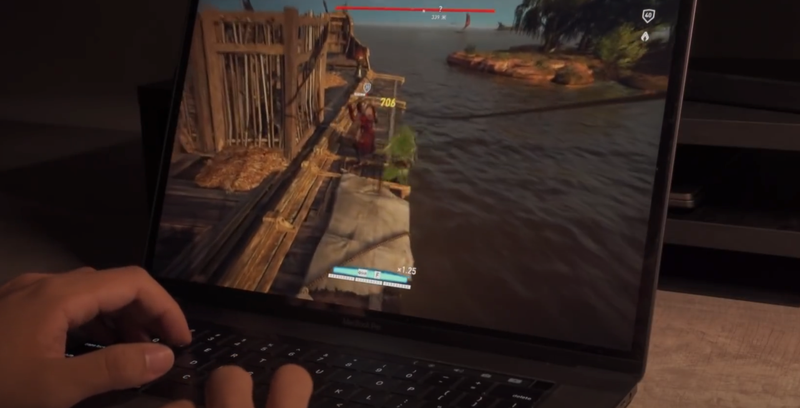
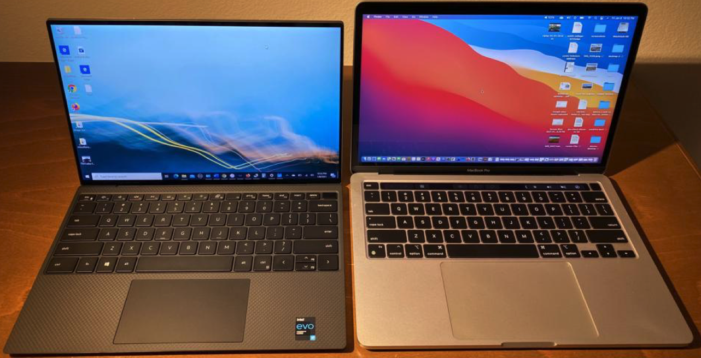

Global Trend
Nowadays, you've see or felt many laptops are rising today. Have you ever thought why this happened? What is the cause?
Nowadays, you've see or felt many laptops are rising today. Have you ever thought why this happened? What is the cause?
| One cause is the Thunderbolt protocol. Thunderbolt protocol was made by Intel. You can do a lot with Thunderbolt, like connect your laptop to a monitor, connect your laptop to eGPU, high speed transferring data and more. The Thunderbolt 4 laptop with Thunderbolt eGPU can increase laptop performance. Plug it at home, it becomes a device that is almost powerful as a desktop, unplug it can become a device that is very mobility. |

|
|  | Another cause is the cloud gaming services like GeForce NOW, Google Stadia, Steam's Remote Play and more. These cloud gaming services support every device like a phone, laptop and even desktop. All you need is a great internet connection. These cloud gaming services are like a streaming app but with controls, you controlled the character to move, your device sends the data thru the internet o the server, and the server does the calculations and sends you back the frames/picture thru the internet. |
| These 2 reasons cause many companies to start focusing on laptops. Intel brought the Evo certification and Apple brought the new M1 chip. It makes the desktop looks useless, is it? |  |
Contact Me: michael.chu@student.tdsb.on.ca